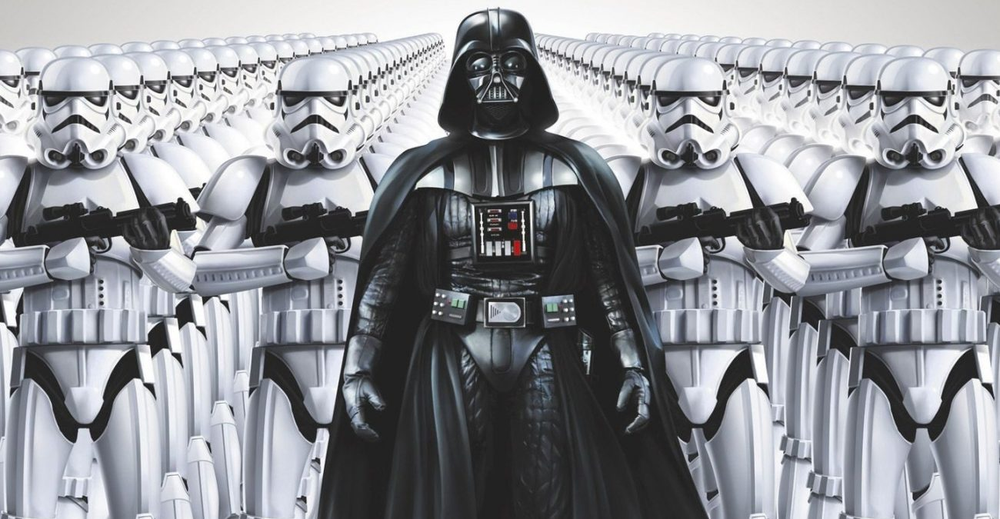

Darth Wader
Posted on June 6, 2020 at 12:00 PM
Персонаж придуман Джорджем Лукасом. По одной из версий, имя Энакин скопировано с фамилии друга Лукаса — режиссёра Кена Эннакина[3], однако сам Лукас это опроверг на следующий же день после смерти Кена[4]. Многие Лорды Ситхов добавляли приставку «Дарт» к своим именам, и постепенно из-за количества «Дартов» она стала ассоциироваться с тёмной стороной Силы. Также эта приставка бралась как символ отказа от прежней жизни. Примером этого служит и Энакин Скайуокер, ставший Дартом Вейдером. Однако, само происхождение слова до сих пор остаётся неопределённым: большинство считает, что «Дарт» (англ. Darth) — это просто сокращение от «Тёмный лорд ситхов» (англ. Dark Lord of the Sith), но существуют теории, предполагающие более глубокую интерпретацию. Также нидерл. Vader /ˈvadər/ — отец[5].
Дарт Вейдер В оригинальной трилогии «Звёздных Войн» Энакин Скайуокер появляется под именем «Дарт Вейдер». Дарт Вейдер — главный антагонист: хитрый и жестокий руководитель армии Галактической Империи, которая правит во всей Галактике. Вейдер выступает как ученик Императора Палпатина. Он использует тёмную сторону Силы, чтобы предотвратить распад Империи и уничтожить Повстанческий Альянс, который стремится восстановить Галактическую Республику. С другой стороны, Дарт Вейдер (или Тёмный Лорд) — одна из величайших фигур во вселенной Звёздных войн. Будучи одним из самых могущественных ситхов, он вызывает симпатию у многих поклонников трилогии и является очень харизматичным персонажем.
Ты не бесстрашен! Страх есть путь на тёмную сторону. Страх порождает гнев; Гнев порождает ненависть; Ненависть — залог страданий. Я сильный страх в тебе ощущаю,